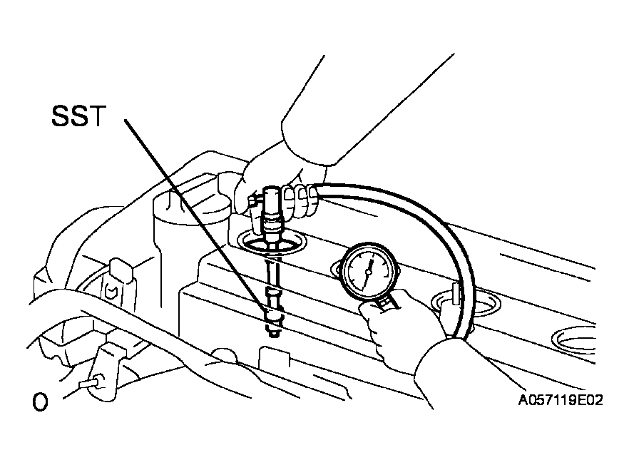

On-Vehicle Inspection
- INSPECT AIR CLEANER FILTER ELEMENT
- Remove the air filter.
- Visually check that the air filter is not excessively damaged or oily.
If necessary, replace the air filter.
- INSPECT IGNITION TIMING
- Warm up the engine.
- When using the intelligent tester or OBD II scan tool:
- Connect the intelligent tester or OBD II scan tool to the DLC3.
- Enter DATA LIST MODE on the intelligent tester or OBD II scan tool.
Standard ignition timing: 8 to 12° BTDC @ idle
HINT:
Refer to the intelligent tester or OBD II scan tool operator's manual if you need help to select the DATA LIST.
- When not using the intelligent tester or OBD II scan tool:
- Using SST, connect terminals 13 (TC) and 4 (CG) of the DLC3.
SST 09843-18040
NOTE:- Confirm the terminal numbers before connecting them. Connection with a wrong terminal could damage the engine.
- Turn OFF all electrical systems before connecting the terminals.
- Perform this inspection after the cooling fan motor is turned OFF.
- Remove the No. 2 cylinder head cover.
- Pull out the wire harness as shown in the illustration.
- Connect the clip of the timing light to the engine.NOTE:
- Use a timing light which can detect the first signal.
- After checking, be sure to tape the wire harness.
- Check the ignition timing.
Standard ignition timing: 8 to 12° BTDC @ idle
NOTE: When checking the ignition timing, shift the transmission to the park or neutral position.HINT:
Run the engine at 1,000 to 1,300 RPM for 5 seconds, and check that the engine RPM returns to idle speed.
- Disconnect terminals 13 (TC) and 4 (CG) of the DLC3.
- Check the ignition timing.
Standard ignition timing: 0 to 14° BTDC @ idle
- Confirm that ignition timing advances when the engine RPM is increased.
- Remove the timing light.
- Using SST, connect terminals 13 (TC) and 4 (CG) of the DLC3.
- INSPECT ENGINE IDLE SPEED
- Warm up the engine.
- When using the intelligent tester or OBD II scan tool:
- Connect the intelligent tester or OBD II scan tool to the DLC3.
- Enter DATA LIST MODE on the intelligent tester or OBD II scan tool.
Standard idle speed
IDLE SPEED SPECIFICATIONTransmission Specified Condition M/T 600 to 700 RPM A/T 650 to 750 RPM NOTE:- When checking the idle speed, the transmission is in the park or neutral position.
- Check the idle speed with the cooling fan OFF.
- Switch off all accessories and air conditioning before connecting the intelligent tester or OBD II scan tool.
HINT:
Refer to the intelligent tester or OBD II scan tool operator's manual if you need help to select the DATA LIST.
- When not using the intelligent tester or OBD II scan tool:
- Using SST, connect the tachometer test lead to terminal 9 (TAC) of the DLC3.
SST 09843-18040
- Check the idle speed.
Standard idle speed
IDLE SPEED SPECIFICATIONTransmission Specified Condition M/T 600 to 700 RPM A/T 650 to 750 RPM NOTE:- When checking the idle speed, the transmission is in the park or neutral position.
- Check the idle speed with cooling fan OFF.
- Switch off all accessories and air conditioning before connecting the test lead to the terminal.
- Using SST, connect the tachometer test lead to terminal 9 (TAC) of the DLC3.
- INSPECT COMPRESSION
- Warm up and stop the engine.
- Disconnect the injector connectors.
- Remove the ignition coils.
- Remove the spark plugs.
- Inspect cylinder compression pressure.
- Connect SST (attachment) to a compression gauge.

Courtesy of © TOYOTA, LICENSE AGREEMENT TMS1002SST 09992-00500
- Install the compression gauge with SST into the spark plug hole.
- Fully open the throttle.
- While cranking the engine, measure the compression pressure.
Standard compression pressure: 1,471 kPa (15.0 kgf/cm 2 , 213 psi)
Minimum pressure: 1,079 kPa (11.0 kgf/cm 2 , 156 psi)
Difference between each cylinder: 98 kPa (1.0 kgf/cm 2 , 14 psi)
NOTE:- Always use a fully charged battery to obtain an engine speed of 250 RPM or more.
- Check other cylinder's compression pressure in the same way.
- This measurement must be done in as short a time as possible.
- If the cylinder compression is low, pour a small amount of engine oil into the cylinder through the spark plug hole and check again.
HINT:
- If adding oil increases the compression, the piston rings and/or cylinder bore may be worn or damaged.
- If pressure stays low, a valve may be sticking or seated improperly, or there may be leakage past the cylinder head gasket.
- Connect SST (attachment) to a compression gauge.
- INSPECT CO/HC
- Start the engine.
- Run the engine at 2,500 RPM for approximately 180 seconds.
- Insert CO/HC meter testing probe at least 40 cm (1.3 ft.) into tailpipe during idling.
- Immediately check CO/HC concentration at idle and 2,500 RPM.
HINT:
When performing the 2 mode (2,500 RPM and idle) test, check that the CO/HC concentration complies with local regulations.
- If the CO/HC concentration does not comply with regulations, troubleshoot in the order given below.
- Check the heated oxygen sensor operation (see DTC P0130 OXYGEN SENSOR CIRCUIT MALFUNCTION (BANK 1 SENSOR 1); DTC P2195 OXYGEN SENSOR SIGNAL STUCK LEAN (BANK 1 SENSOR 1); DTC P2196 OXYGEN SENSOR SIGNAL STUCK RICH (BANK 1 SENSOR 1) ).
- See the table below for possible causes, and then inspect the applicable causes and repair it if necessary.CO AND HC PROBLEM CAUSES CHART
CO HC Problems Causes Normal High Rough idle - Faulty ignition:
- Incorrect timing
- Plugs are contaminated, plugs are shorted or plug gaps are incorrect
- Incorrect valve clearance
- Leaks in intake and exhaust valves
- Leaks in cylinders
Low High Rough idle (Fluctuating HC reading) - Vacuum leaks:
- Ventilation hoses
- Intake manifold
- Throttle body
- IAC valve
- Brake booster line
- Lean mixture causing misfire
High High Rough idle (Black smoke from exhaust) - Restricted air filter
- Plugged ventilation valve
- Faulty SFI system:
- Faulty pressure regulator
- Defective ETC sensor
- Defective mass air flow meter
- Faulty ECM
- Faulty injectors
- Faulty throttle position sensor
- Faulty ignition: